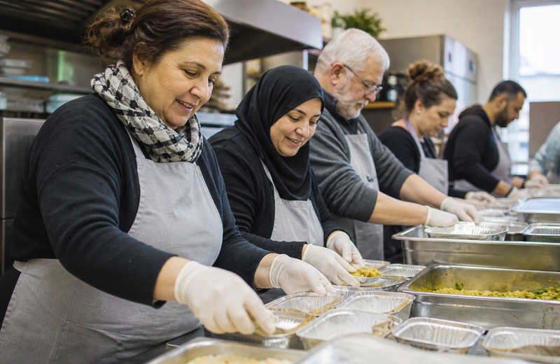

Aide alimentaire
Épicerie solidaire et paniers hebdomadaires à prix modiques.

72 % de l'objectif atteint — merci à nos 340 donateurs
Épicerie solidaire et paniers hebdomadaires à prix modiques.

Ateliers CV, stages et mise en relation avec les employeurs.
Permanences juridiques, logement et accès aux droits.
Paniers alimentaires et accompagnement social chaque année en Moselle.
Taux de sortie positive des parcours insertion en 2024.

Citoyens engagés — 2 h par mois en moyenne suffisent.
3 200 familles accompagnées — paniers adaptés et accueil bienveillant.
Parcours sur 3 à 6 mois — 68 % de retour à l'emploi en 2024.
Fêtes de quartier, cuisine partagée et maraudes hivernales.

« Grâce au parcours insertion, j'ai retrouvé un CDI en trois mois. Une équipe humaine et exigeante. » — Marc D., 2025
Chaque geste compte.
Je m'engage